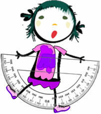

Меню сайта
Главная Познавательная информация Справочная информация ОГЭ Ученикам
Литература для подготовки к ОГЭ
Новые книги для подготовки к ОГЭ 2022 по математике
смотри здесь
Задания из открытого банка ОГЭ по математике в pdf:
1. Практико-орентированная часть
https://vpr-ege.ru/oge/matematika/969-prototipy-zadanij-1-5-oge-po-matematike
https://disk.yandex.ru/d/0LbBmY2gz58JG
3. Числовые последовательности
https://disk.yandex.ru/i/3Vr7OmbMz54tp
4. Функции
https://disk.yandex.ru/i/Qm-821yxz55YV
5. Координаты на прямой и плоскости
https://disk.yandex.ru/i/zggHD5EPz57zH
https://disk.yandex.ru/i/wOPJu-vNz57EZ
https://disk.yandex.ru/d/sufRSwnL3FmsDh
https://disk.yandex.ru/d/S3k35ouM3G8dV9
9. Геометрия
Полезные ссылки для подготовки к ОГЭ

https://math-oge.sdamgia.ru/ Онлайн-тесты по всем предметам
http://gia.edu.ru - Официальный портал ГИА9 по математике
http://ege.yandex.ru/mathematics-gia - Тесты ГИА онлайн по математике
http://gia-online.ru/tests/onlajn_testy_gia_po_algebre_matematike/
http://alexlarin.net/ - Тренировочные варианты публикуются по средам
один раз в неделю, а ответы к ним - по понедельникам
Открытый банк заданий: http://www.fipi.ru/content/otkrytyy-bank-zadaniy-oge
http://bankoge.com/matematika/chisla-i-vychisleniya
https://oschool.ru/lecture/VkNq0Lu3
https://ege4.me/kategoriya-zadachi/oge
http://school.umk-spo.biz/gia/forum/
Теория вероятностей
https://self-edu.ru/balak_scool_tp.php
Сумма n первых членов арифметической прогрессии1
https://www.youtube.com/watch?v=d3R-gCrf8Ho
Сумма n первых членов арифметической прогрессии2
https://www.youtube.com/watch?v=TWrkIJARloo
https://www.youtube.com/watch?v=v58bYQSsWss
Квадратное уравнение Задание на соотнесение
https://www.youtube.com/watch?v=fHSUsIID_Pw
Приведенные квадратные уравнения Теорема Виета
https://www.youtube.com/watch?v=rR70juPnyhk
Знаки коэффициентов k и b в формуле линейной функции y=kx+b
https://www.youtube.com/watch?v=uCtN-gjwdms
Знаки коэффициентов k и b в формуле линейной функции y=kx+b1
https://www.youtube.com/watch?v=8oNKeLMx0_A
Знаки коэффициентов k и b в формуле линейной функции y=kx+b2
https://www.youtube.com/watch?v=hAYq9v2Qiqc
Знаки коэффициентов k и b в формуле линейной функции y=kx+b3
https://www.youtube.com/watch?v=Ym7DKhgUspc
Графический способ решения систем
https://www.youtube.com/watch?v=aiNsDOwju2U
https://www.youtube.com/watch?v=8e7mb7CSCmA
https://www.youtube.com/watch?v=LnLwSkLSZ2w
Линейная функция, прямая пропорциональность
https://www.youtube.com/watch?v=lipK9t6ULaA
Вычисление координат точки пересечения прямых
https://www.youtube.com/watch?v=qNaoebZm4-M
Определение формулы линейной функции по двум заданным точкам
https://www.youtube.com/watch?v=I1qY_n5c75k
https://www.youtube.com/watch?v=ZdaMvQPopd8
Разбор заданий из второй части ОГЭ 9 по математике:
Арифметический квадратный корень1
Арифметический квадратный корень2
Арифметический квадратный корень3
Арифметический квадратный корень4
Арифметический квадратный корень5
Арифметический квадратный корень6
Арифметический квадратный корень7
Решение неравенства методом интервалов1
Решение неравенства методом интервалов2
Решение неравенства методом интервалов3
Решение неравенства методом интервалов4
Решение неравенства методом интервалов5
Решение неравенства методом интервалов7
Решение неравенства методом интервалов8
Решение неравенства методом интервалов9
Сократить дробь Свойства степени
Уравнение Разложение на множители способом группировки
Сравнение действительных чисел